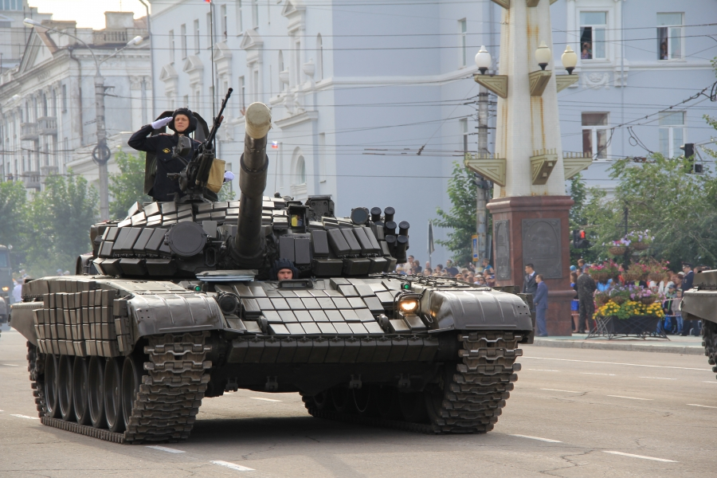

День танкиста-
Cоветский, российский, белорусский и украинский ежегодный профессиональный праздник танкистов и
танкостроителей, не имеющий фиксированной даты и отмечаемый обычно во второе воскресенье сентября
(В 2020 году праздник выпадает на 13 сентября).
В торжествах принимают участие служащие танковых подразделений Вооружённых сил РФ по контракту и призыву, офицеры, курсанты, преподаватели профильных
учебных заведений. Праздник отмечается всеми, кто когда-либо был в рядах этого рода войск, конструкторы, инженеры, работники заводов и
научно-исследовательских институтов, разрабатывающих бронетехнику. К мероприятиям присоединяются их родственники, друзья, знакомые и близкие люди.
В этот день проводятся праздничные мероприятия и концерты, на которых служащие принимают поздравления.
Им вручают знаки отличия: медали, грамоты, награды, вносят благодарственные звания в личные дела.
К празднику приурочивают повышения в должностях и званиях.
История праздника
Изобретение бронированных машин относят к началу ХХ века, над ними работали одновременно несколько стран.
В Российской Империи наш соотечественник
Василий Менделеев
Василий Дмитриевич Менделеев (1886, Санкт-Петербург — 1922, Екатеринодар)
— русский инженер, изобретатель и создатель проекта первого российского танка под названием «Бронеход», сын знаменитого русского химика Д. И. Менделеева.
, сын известного русского химика, в период с 1911 по 1915
годы проектировал тяжелую бронированную машину, которая вполне могла стать прототипом современных танков. Причем делал
он это на голом энтузиазме, в свободное от основной работы время. Однако армия и власти идеей не заинтересовалась, что
не отменяет того факта, что Менделеев-младший первым в стране и одним из первых в мире предложил проект сверхтяжелого танка.
Впервые танки применила Англия в 1916 году во время Первой Мировой войны в Битве на Сомме, прорвав таким образом оцепление
противника с минимальными потерями для собственной армии. Это достижение, конечно, заставило остальные страны задуматься о
новом подходе к ведению войн.
Отечественное танкостроение берет начало уже в СССР. Днем рождения первого русского танка считается
31 августа 1920 года - именно в этот день в цехах Нижнего Тагила завершили производство Танка М (малого), который являлся копией
одной из английских машин. Танкостроение в Советском Союзе стало развиваться быстро, что впоследствии оказало огромное влияние на
исход Второй Мировой войны. И уже в 1946 на Красной площади прошел парад с участием танковой дивизии. В том же 1946 году Указом Президиума
Верховного Совета СССР был учрежден праздник День танкиста. Во всем Союзе его отмечали 11 сентября - в память об успехах российских танковых
войск во время Восточно-Карпатской операции 1944 года. Дата праздника сохранялась вплоть до 1980 года - каждый год 11 сентября проводились
праздничные мероприятия в честь танкистов и всех причастных к этой военной отрасли. Затем очередным Указом Президиума Верховного Совета
СССР была установлена новая дата - второе воскресенье сентября. В этот день танкистов поздравляют и до сих пор - в современной России праздник
был закреплен Президентом РФ в 2006 году.
Традиции праздника
День танкиста - международный праздник, его отмечают в России и странах бывшего СССР: Белоруссии, Украине, Казахстане.
В этот день поздравляют не только служащих танковых войск, но и танкостроителей, инженеров и техников.
В советское время, особенно в послевоенные годы, в честь праздника проходили торжественные парады танковых колонн, запускали салюты.
В наше время День танкиста в России празднуется хоть и без размаха, зато с вниманием к виновникам торжества. Военных танковых дивизий
поздравляют на федеральном уровне, на региональном, и, конечно же, в своих частях. Руководство обращается к служащим с торжественной
речью, а особо отличившихся награждает. В городах, где расположены военно-технические заводы и военные части, проводятся парады, концерты
и фестивали, в эфире местного телевидения показывают фильмы о танкистах. Завершает праздничный день, как правило, праздничный фейерверк.